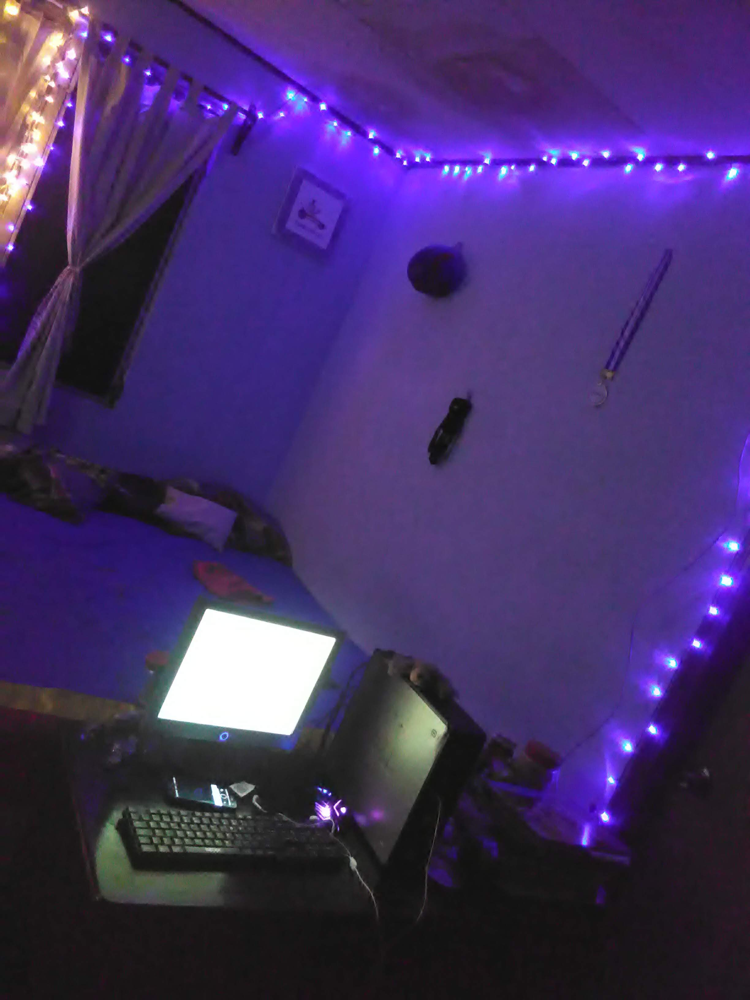
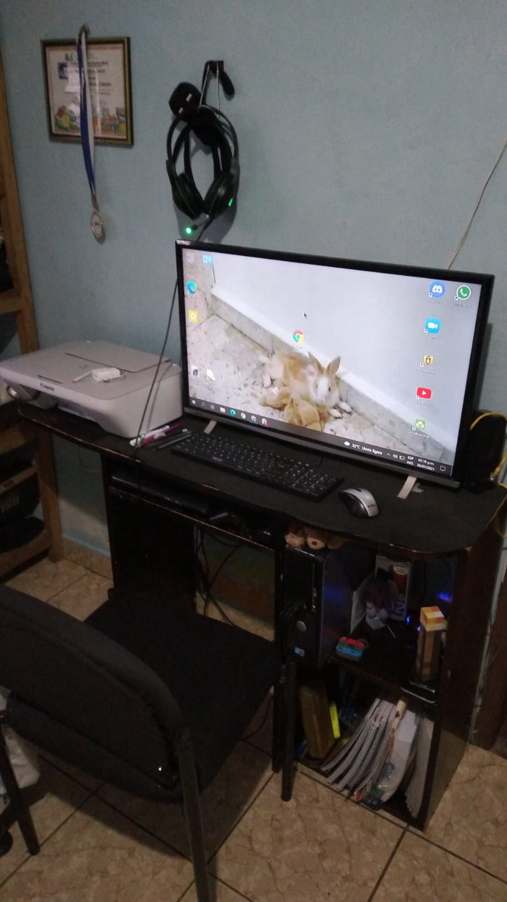
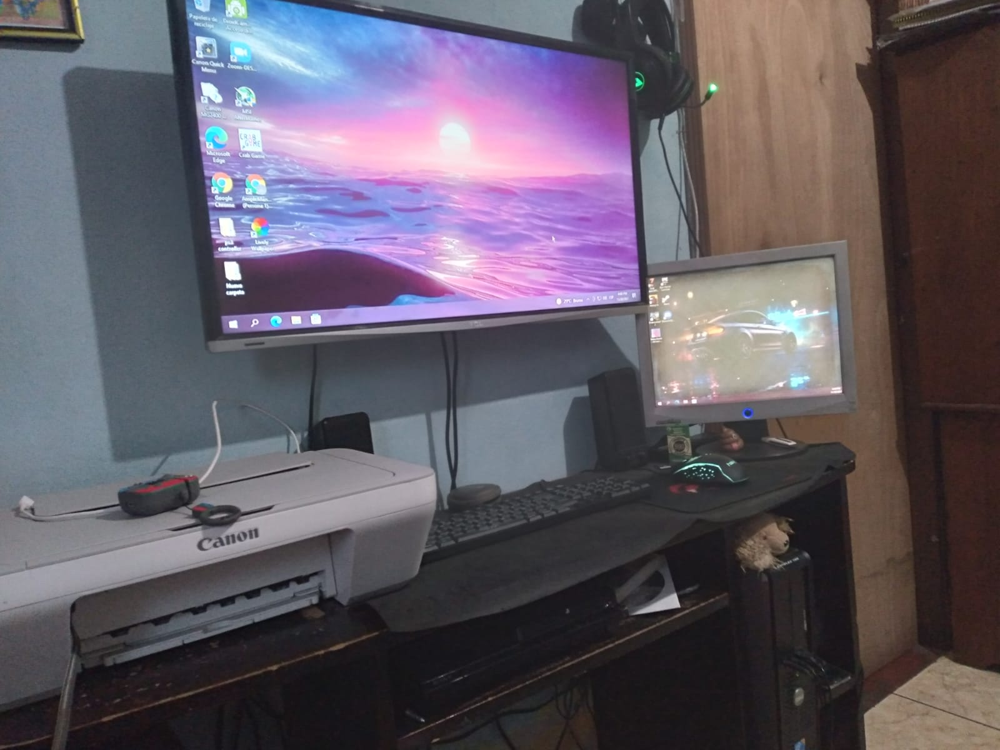
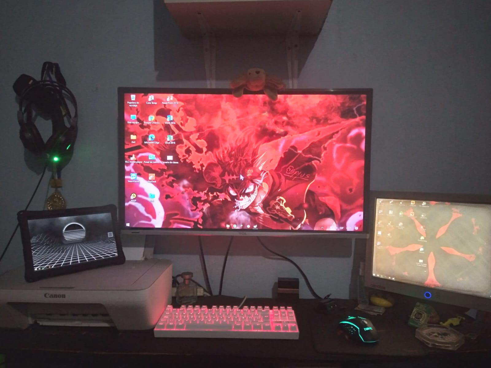
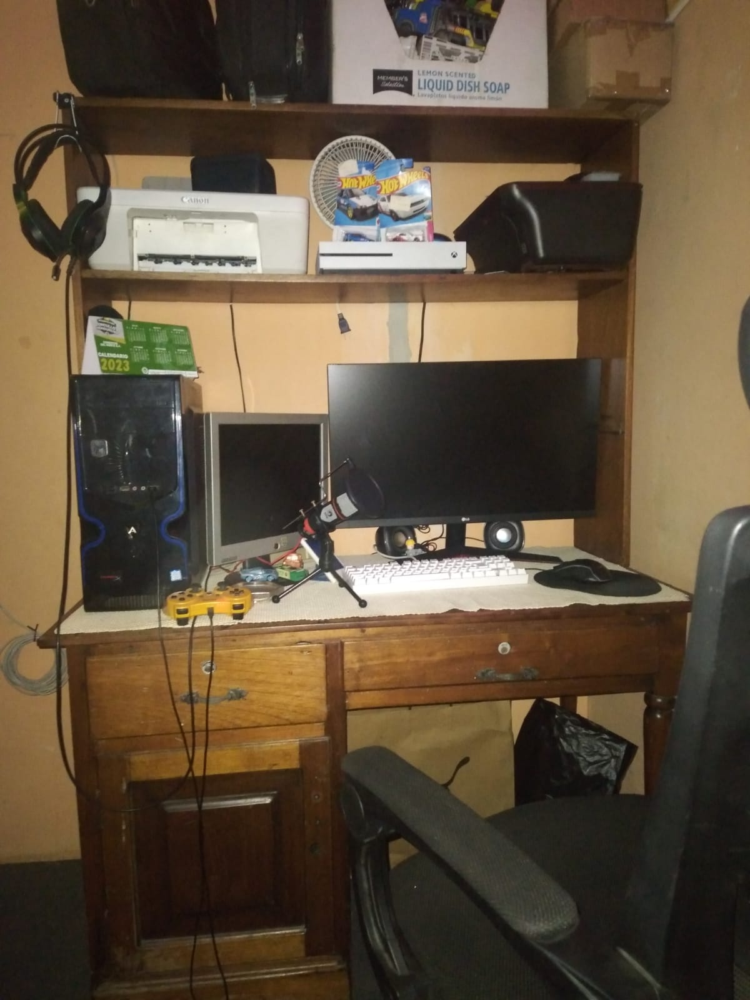
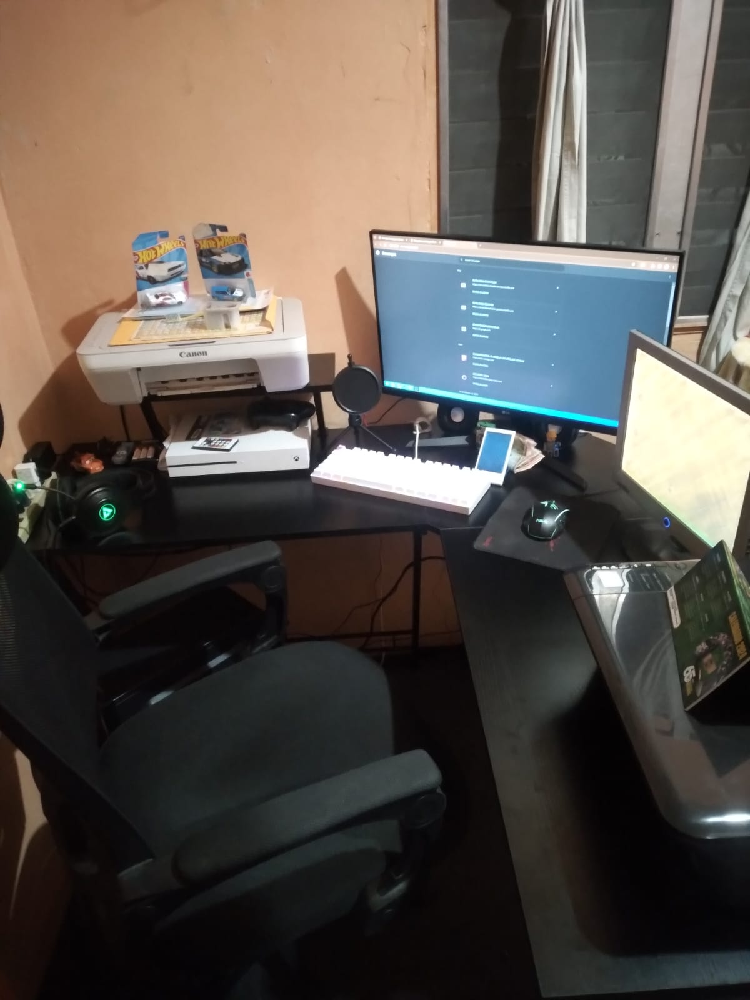
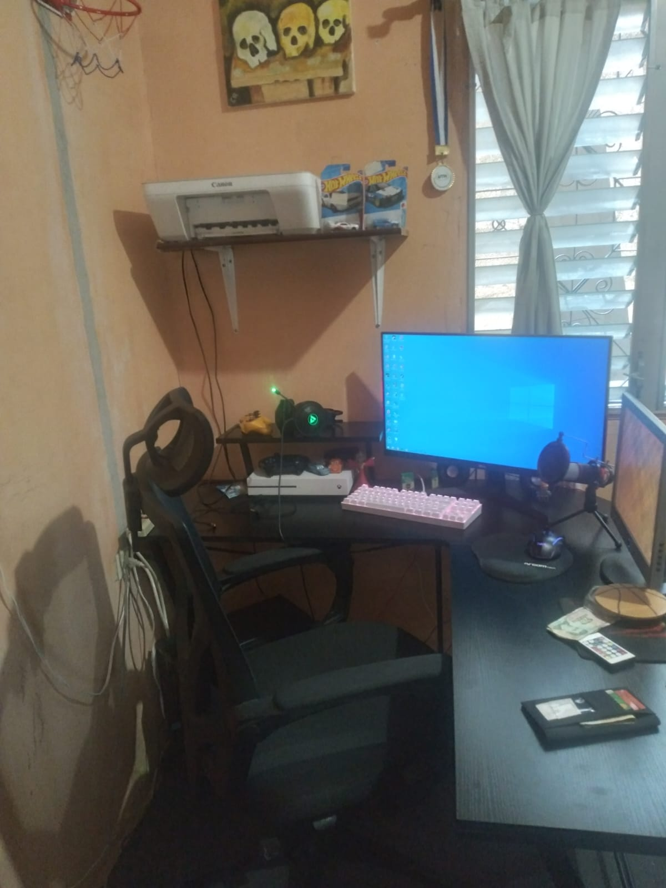

Este es mi lugar favorito, ya que ahí es donde tengo mi computadora, en ella paso la mayoria del tiempo de mi dia.
En el año 2021, me compraron una computadora, estaba alegre por que desde unos 6 meses atras habia comenzado a ver muchos videos de informática, mi canal de youtube favorito era YANPOL, de el y otros canales aprendí mucho sobre software y mas que nada hardware, al ver de estos videos me llenaba de ganas por tener una computadora, cuando mis papas me la regalaron rapidamente la coloqué junto con un monitor que teniamos guardado, el mouse nos lo prestó un primo mientras comprabamos uno y el teclado lo compró mi papa al dia siguiente.

Al pasar el tiempo fui actualizando el set-up, guardé el monitor pequeño y comencé a usar un televisor de 32" (puede ser por eso que ahora ocupo lentes). Mi papa compró una impresora. Tenia un mouse inalámbrico de antena USB, unos parlantes y audifonos con lucesitas. Le puse foami al escritorio.

Tiempo despues me vi en la necesidad de mas espacio en el escritorio y dentro de la computadora, mi papá colgó el televisor en la pared, instalé el monitor pequeño como adicional haciendo que haya mas espacio en el escritorio fisico y digital. Me compraron un mouse y mouse pad.

Mas adelante, me pasaron a la sala, aqui seguia casi igual pero en diferente lugar y compré un teclado mecanico RGB Redragon Kumara k552. Tenia la laptop que prestó el colegio como tercer monitor (lo extraño). Quité los parlantes por que le instalé una grafica a la pc que tenia HDMI y podia salir el audio por el televisor.

Me mudé de casa y ahora tengo cuarto propio, actualicé de pc pero no tomé foto, mas adelante moví el cuarto, actualicé otra vez de pc ya esta es mucho mejor que las otras, me compraron un monitor de 27" y mi mamá me regaló un microfono y un mouse pad ergonómico. Mis papas me regalaron una silla muy comoda.

Mi mamá me regaló un escritorio en L, algo que queria mucho por que me gusta tener mucho espacio. aqui pude acomodar muchas cosas bien, aunque la computadora quede abajo.

Y así es como tengo actualmente mi lugar favorito:
